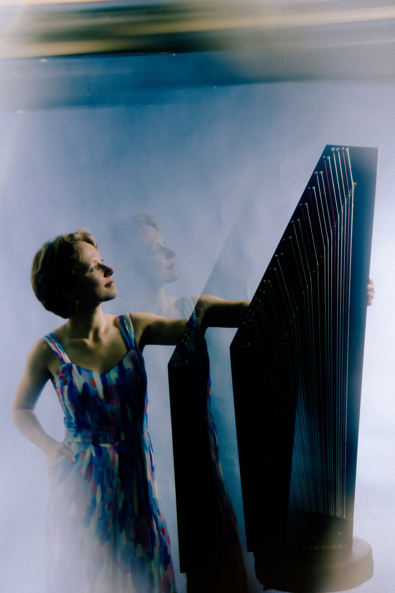

Platzhalter-Beschreibung für Projekt 1 — kurzer Text zu Besetzung, Programm oder Zusammenarbeit.
Platzhalter-Beschreibung für Projekt 2.
Platzhalter-Beschreibung für Projekt 3.

Platzhalter-Beschreibung für Projekt 4.
Platzhalter-Beschreibung für Projekt 5.
Platzhalter-Beschreibung für Projekt 6.